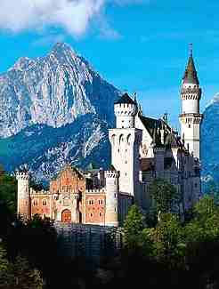

| Home |
Touren |
Community |
News |
Tipps und Termine |

Schloss Neuschwanstein
Schloss Neuschwanstein kann nur im Rahmen einer Führung besichtigt werden. Deutsch- und englischsprachige Besucher
werden durch das Personal der Bayerischen Schlösserverwaltung geführt, für alle anderen Besucher werden begleitete
Audio-Guide-Führungen in den Sprachen Japanisch, Französisch, Spanisch, Italienisch, Tschechisch, Slowenisch, Russisch,
Polnisch, Chinesisch (Mandarin), Portugiesisch, Ungarisch, Griechisch und Holländisch angeboten.
Alle Führungen dauern ca. 30 Minuten.
Führungsreservierungen sind bis spätestens einen Tag vor dem gewünschten Schlossbesuch beim Ticketcenter Hohenschwangau
möglich.
Impressum